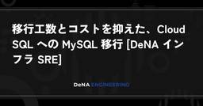
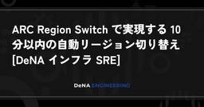
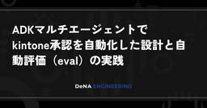
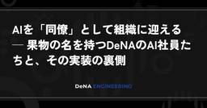

DeNA Engineering on DeNA Engineering
https://engineering.dena.com/
DeNA Engineering は、DeNAのエンジニアの技術・文化・チーム等を伝えるポータルサイトです。
フィード
AI コストの DeNA 的管理手法 〜 FinOps の視点で 〜
DeNA Engineering on DeNA Engineering
こんにちは。IT 基盤部の小池です。副部長とパブリッククラウドチームのリーダーを兼務しています。 2026 年 7 月 28 日(火) に開催された、 トークンコストへの向き合い方 ― 新時代の開発コストへの対応を学ぶ会 に登壇した際の内容を説明しようと思います。AI コストの DeNA 的管理手法 ~ FinOps の視点で ~ by @DeNA_Tech はじめに 生成 AI の劇的な進化を受け、DeNA は現在、全社を挙げてAIをフル活用する「AIオールイン」の姿勢を鮮明に打ち出しています。 しかし、この「攻め」の姿勢を支えるためには、裏側で急増する AI コストをコントロールする「守り」の基盤も不可欠です。
2日前

移行工数とコストを抑えた、Cloud SQL への MySQL 移行 [DeNA インフラ SRE]
DeNA Engineering on DeNA Engineering
はじめに こんにちは、 IT 基盤部の izawa です。主に高い可用性が求められる大規模プロダクトのインフラを担当しています。この記事では、以前 IaaS (MySQL on GCE) で運用していたデータベースを Google Cloud のマネージドサービスである Cloud SQL に移行した際の経験をご紹介します。マネージドサービスへのデータベース移行を検討されているインフラエンジニアの方々にとって、本記事が具体的なイメージを深める一助となれば幸いです。本記事では、マネージドサービスを活用することで移行工数を抑えつつ安全に移行できたこと、マネージド移行の懸念点であるコストを抑えながら実現できた工夫、そして移行作業の全体像と具体的なポイントについてお伝えします。
2日前

ARC Region Switch で実現する 10 分以内の自動リージョン切り替え [DeNA インフラ SRE]
DeNA Engineering on DeNA Engineering
はじめに こんにちは、 IT 本部 IT 基盤部 第三グループの横野です。DeNA では、全社的な業務を支える基盤サービスが多数存在します。その中には、リージョン障害が発生した場合でも 目標復旧時間（RTO）が 10 分のサービスなど、特に高い可用性が求められるサービスもあります。こうした要件を満たすため、私たちは Disaster Recovery（DR）の自動化に取り組みました。本稿では、そのような厳しい要件を持つサービスに対して、どのように障害を正確に検知し、高可用性な自動切り替えメカニズムを実現したのか、そのアーキテクチャと具体的な仕組みについてご紹介します。読者の皆さんが、高い可用性を要求されるサービスにおける DR 自動化の一例について理解を深めていただければ幸いです。
3日前

ADKマルチエージェントでkintone承認を自動化した設計と自動評価（eval）の実践
 2
2
DeNA Engineering on DeNA Engineering
はじめに こんにちは。DeNA でエンジニアをしている外山です。社内のツール利用申請ワークフロー（kintoneで運用）には、承認前に人間が行っていた3つの確認作業がありました。予算内かどうか（予算残額シートとの突き合わせ） 申請されたツール名がマスターに存在するか 「法務確認は不要」という選択が本当に妥当か どれもレコードの内容を読んで、別のスプレッドシートやマスターと照合するだけの定型作業ですが、申請件数が増えると地味に時間を取られます。判断基準がはっきりしていて件数も多いこうした作業は、エージェントに任せて効率化できる余地が大きいと感じていました。
4日前

AIを「同僚」として組織に迎える ─ 果物の名を持つDeNAのAI社員たちと、その実装の裏側 1
DeNA Engineering on DeNA Engineering
はじめに こんにちは、IT本部IT戦略部の小山です。DeNAで「AI社員」という取り組みを進めています。「AI社員」と聞くと、チャットボットや業務自動化ツールを大げさに呼んでいるだけなのでは、と思う方もいるかもしれません。私たちが取り組んでいるのは少し違います。Slack上の専用チャンネルに常駐し、名前とアイコンを持ち、部署に配属され、予定されたタスクをこなし、チームメンバーからの質問に答え、一日の終わりに日報を書く——人間の同僚と同じような形で組織に組み込まれたAIエージェントを、社内では「AI社員」と呼んでいます。
5日前

11 の技術コミュニティが新入社員をお出迎え 〜TechTalk #95 開催レポート〜
DeNA Engineering on DeNA Engineering
はじめに こんにちは。エンジニアリング室で内定者インターンをしている大崎です。 本イベントの運営と、当日の司会を担当しました。DeNA には、部署や事業を越えて、同じ技術が好きなエンジニアが集まる社内技術コミュニティがいくつもあります。 そして技術領域の枠も越えて、全社のエンジニアが集まる場が、2010 年から続く社内 LT イベント TechTalk です。 「DeNA 社員にとって一番敷居の低いイベント」を目指していて、普段はエンジニアが好きなテーマで気軽に発表しています。 新入社員が現場に合流するこの時期だけは、毎年恒例の特別回。 社内の技術コミュニティが一堂に集まり、新しく入った仲間に活動を紹介する「技術コミュニティ紹介会」です。 今年で 3 回目となるこの企画に、11 のコミュニティが参加してくれました。
11日前
kintone内製プラグインで350超アプリのカスタマイズをノーコード化した話
DeNA Engineering on DeNA Engineering
はじめに こんにちは、IT本部IT戦略部テクニカルオペレーショングループの入倉です。DeNAグループにおけるITシステム・ツールの導入企画から運用管理、運用改善などを担当しています。DeNAグループでは、物品の購入申請や新規ツールの利用申請など、日々発生するさまざまな業務に「kintone アプリ」を広く活用しています。全社で広く使われるものから特定の部署内だけで利用される小規模なものまで含めると、現在稼働しているアプリ数は700を超えています。
12日前
Claude Codeのハーネスを育てるアプリを作ってみた 〜~/.claudeには宝が眠っている〜
DeNA Engineering on DeNA Engineering
こんにちは、松島です。元々はバックエンドエンジニアで、今はDeSCヘルスケアでデータアナリスト兼アナリティクスエンジニアをしています。「LLM×データ×分析×エンジニアリング」の交差点あたりが好きで、気づけばいつもそのあたりで手を動かしています。普段は業務でClaude Codeを触りまくっています。使っていると、~/.claude の下にはいろいろなものが溜まっていきます。CLAUDE.mdに書き足したルール、Claudeが勝手に覚えてくれたメモリ、日々のセッションログ、いつか作ったスキル。ここまでは、使っている人ならみんな知っている話だと思います。
25日前
エンジニアが仕掛ける「職種の壁を越えたAI活用」。チーム全員でClaude Codeを使いこなす文化と仕組み
DeNA Engineering on DeNA Engineering
はじめに 社内のAI環境やAIツールの提供をリードしているIT本部が中心となって、社内のAI戦略や活用事例、その裏側にあるストーリーを発信する企画「AIジャーニーの足跡」。 前回に引き続き第2幕では、IT本部の新卒エンジニアが社内を駆け巡り、ビジネスや開発の現場でどのように AI が活用されているのかをレポートしていきます。AI によって個人の作業効率が上がる一方で、これからは「職種同士の連携」がより重要になってくるのではないか――。エンジニア個人のコーディング速度が上がっても、仕様策定やデザイン、職種間のコミュニケーションに時間がかかっていては、最終的なプロダクトのリリース速度は上がりません。
1ヶ月前
sql_exporter × Prometheus で実現する Solid Queue の滞留監視と可視化 [DeNA インフラ SRE]
DeNA Engineering on DeNA Engineering
はじめに IT 基盤部 第二グループの無津呂です。私たちのチームがインフラ運用を担っているプロダクトにおいて、ジョブキューシステムを Solid Queue に移行しています。Solid Queue のパフォーマンス特性に関する検証と考察 | BLOG - DeNA Engineering はじめに ゲームサービス事業本部の三軒家です。 社内のとある Ruby on Rails プロダクトにて、ジョブキューシステムのバックエンドを Solid Queue に移行するプロジェクトを推進しています。 この記事では、Solid Queue への移行に際して実施した負荷試験の様子と、その結果として得られた Solid Queue のパフォーマンス特性に関する知見について …
1ヶ月前
「技術に興味がない」と言い切って入社した私が、ゲーム開発者のためのSREとして駆け抜けた1年間
DeNA Engineering on DeNA Engineering
はじめに こんにちは！25卒で新卒入社し、ゲームサービス事業本部開発運営統括部第一技術部ゲーム開発SREグループ、「通称：ゲーム開発者のためのSREチーム」に所属している重本玲奈( @ray_asymme )です。気づけば入社から1年が経過しており、技術のインプットやキャッチアップに追われながらも、エンジニアとして充実した日々を過ごしています。私は就職活動の時から一貫して、あるスタンスを表明し続けて入社しました。それは、「技術そのものには興味がありません。技術を『どう使うか』にしか興味がないです。」というものです。大学時代は、技術と人間の接点を探る「ヒューマンコンピュータインタラクション(HCI)」を専攻しており、常に「誰が」「何のために」ものを使うのか、「何がしたいのか」という目線で物事を考えていました。
1ヶ月前
年間100名以上のマネージャが体験する、DeNAのセキュリティインシデント対応ワークショップの仕組みと狙い
DeNA Engineering on DeNA Engineering
はじめに こんにちは！ DeNAセキュリティ部の竹浪と申します。突然ですが、セキュリティインシデントが発生したとき、あなたの組織では誰が対応をリードしますか？DeNAでは、日々変化する事業環境の中で、サービスを安全かつスピーディーに提供するために、さまざまな角度からセキュリティ強化に取り組んでいます。中でもユニークなのが、今回ご紹介する新任マネージャ向けのセキュリティインシデント対応ワークショップです。この記事では、DeNAがなぜこのワークショップを重要視し、どのように実施しているのか、そしてどのような学びを提供しているのかをお伝えします。
1ヶ月前
社内申請が行われるたびにプロンプトがどんどん育つAIエージェントを支えるDevin
DeNA Engineering on DeNA Engineering
はじめに こんにちは。IT本部 AI・データ戦略統括部 データ基盤部 AIジャーニー推進グループで、エンジニアをしている小野寺です。私たちのチームは、ふだんの開発に AI 駆動開発をどんどん組み込もうとしています。スクラムのスプリントに Devin を「もう一人のメンバー」として組み入れ、外部ツールの利用申請への記入といった定型作業を少しずつ AI に任せてきました。今回紹介するのは、その申請エージェントのプロンプトを AI 自身に毎週改善させる取り組みです。
1ヶ月前
Claude Code 実践知見 — Anthropic エンジニア勉強会レポート
DeNA Engineering on DeNA Engineering
はじめに こんにちは、IT 本部エンジニアリング室組織デザイングループの渡邊です。DeNA では AI オールインのスローガンのもと、全社的に AI を活用した生産性の向上に取り組んでいます。1社内でも Claude Code の利用者は着実に増えており、その活用をさらに広げる一環として、Anthropic 社から講師をお招きした勉強会が開催されました。開発者だけでなく、ビジネス職のメンバーも数多く参加しました。本記事では、登壇者から直接聞いた実践的な知見を中心に、勉強会のレポートをお届けします。
2ヶ月前
OpenAIエンジニアによるCodexを「自律エージェント」として使い倒すための勉強会レポート
DeNA Engineering on DeNA Engineering
こんにちは、DeNA ヘルスケア事業本部ウェルビーイング事業部DXソリューション部の川上知宏です。現在弊社では「AI オールイン」を掲げ、プロダクト開発のあり方そのもののアップデートに取り組んでいます。 今回はその一環として、OpenAI 社から 3 名の講師をお招きし、OpenAI が提供する、複雑なタスクを自律的に実行し、人と協働しながら仕事を前に進める AI エージェント「Codex」に関する勉強会を開催しました。 オンラインで開催された 1 時間のセッションには、300 名を超える社員が集まり、大規模な勉強会となりました。
2ヶ月前
MySQL のバージョンアップによる MHA のバグを踏んだ話 [DeNA インフラ SRE]
DeNA Engineering on DeNA Engineering
こんにちは、IT 基盤部の西崎です。主に DeNA がグローバルに展開するゲームのインフラ管理を担当しています。今回は MySQL のバージョンアップによって社内で利用しているツールで障害が発生し、その調査をした時のことをまとめてみます。細かい話になりますが、大規模に MySQL を使っている環境ならではの経験を紹介できると思います。この調査自体は数年前に行ったものなので、この後の対応などについても追って記事にできればと考えています。何が起こったのか DeNA では MHA という MySQL の高可用性ツールを利用しています。
2ヶ月前
AIに進捗確認を任せようとしたら、自分が進捗を見るようになった話 [DeNA インフラ SRE]
DeNA Engineering on DeNA Engineering
はじめに IT基盤部第一グループの大田です。私はインフラエンジニアとして日々の運用を担当する一方で、ここ一年ほどはチームの長期施策の進捗管理にも関わるようになりました。自分が直接担当する施策について、複数の関係者と調整しながら課題を前に進めることには慣れていましたが、そうではない案件について、PM(プロジェクトマネージャー）として間接的に完了まで見届ける仕事にはまだ不慣れでした。そこで私は、PM業務、その中でも特に進捗確認の部分をAIで楽にできないかと考えました。複数のプロジェクトが並行して進んでいると、どの施策が順調で、どこにテコ入れのフォローが必要なのかなどを把握し続けることが手間になります。AIが個々のプロジェクトの状況を整理してくれれば、その負担も減るのではないかと考えました。
2ヶ月前
ターゲットユーザーの“意識のズレ”をどうAIに組み込むか？——「AIペルソナ」が開発メンバーの相談相手になる日を目指して
DeNA Engineering on DeNA Engineering
社内のリアルなAI活用事例を発信する連載企画「AIジャーニーの足跡」。今回は「AIペルソナ」をテーマに、顧客理解のプロフェッショナルである森本修さんにインタビューを行いました。主務としてゲームサービス事業本部開発運営統括部分析部インサイトアナリティクス第三グループ、兼務としてソリューション本部マーケティング統括部マーケティング部コンシューマーインサイトグループに所属されています。兼務側で「AIペルソナ」について研究を行いながら、主務であるゲーム事業に活かす動きをされています。このインタビューでは、ゲーム開発の意思決定を加速させる「AIペルソナ」の構築手法と、それがもたらすプロダクト開発の未来について迫ります。
2ヶ月前
GDC2026で実感したAI時代のゲーム開発と現地参加でしか得られない学び
DeNA Engineering on DeNA Engineering
はじめに 皆さん、こんにちは！ゲームサービス事業本部開発運営統括部の九谷（ @4_mio_11 ）です。普段はUnityエンジニアとしてアウトゲーム関連を担当しています。AIの活用による業界内変化の激しい中、3月にサンフランシスコで開催された世界最大のゲーム開発者会議「Game Developers Conference（GDC）」に参加しました。本稿では、AI技術の進化と業界全体のレイオフの波が交錯する中で、私が現地で何を感じ、どのような知見を得たのかをお伝えします。このレポートが、GDC 2026現地参加の価値を皆さんと共有し、世界のゲーム業界の現状とスタンダードをアップデートする一助となれば幸いです。公式セッションだけでは得られない 非収録のセッションであるラウンドテーブルセッションからの学びや、現地で肌で感じたゲーム業界の熱量 を中心に、イベント概要、現地での戦略などについてご紹介します。
2ヶ月前
Dynatrace における個人情報マスキングのアプローチについて [DeNA インフラ SRE]
DeNA Engineering on DeNA Engineering
はじめに こんにちは。 IT 本部 IT 基盤部 第三グループの岡崎です。 IT 基盤部では、組織横断的にさまざまなサービス・プロダクトのインフラ運用を行っており、サービスの安定的な稼働や、運用の改善などに取り組んでいます。本記事では、我々が利用検証を進めているオブザーバビリティツールの1つである Dynatrace において、取り込まれるログ内の個人情報をマスキングする方法についてご紹介します。 Dynatrace においてログをマスキングする方法としていくつかのアプローチが提供されていますが、それぞれのアプローチの特徴を把握し、自身の要件に合わせた選択ができるようになることを目的としています。
2ヶ月前
「使いこなす」より「使いまくる」！情シスの生成AI活用事例10選
DeNA Engineering on DeNA Engineering
こんにちは、DeNA IT戦略部 コーポレートオペレーショングループ（通称：CorpOps「コープオプス」）の一戸です。いわゆる情シス部門で、その中でも私たちは経理・人事などコーポレートオペレーション領域で利用している全社共通システムの運用保守と業務改善を行っているチームです。私たちは隔週で「AI Meeting」という会を開催しています。AIオールイン宣言以降、私たちの悩みは尽きませんでした。どんなAIツールがあるのか、どのAIツールがよいのか、何ができるのか、どんな使い方があるのか、どんな業務に向いているのか、etc…
2ヶ月前
AI Day 2026 の来場者向けネットワークを構築した話
DeNA Engineering on DeNA Engineering
こんにちは、IT基盤部 ネットワークグループの岡崎です。主に社内ネットワークのインフラを担当しています。2026 年 3 月 6 日、渋谷ヒカリエホールにて「DeNA × AI Day 2026」が開催されました。DeNA が「AI オールイン」を宣言してから 1 年、「Proof.」をテーマに掲げ、あらゆる領域で AI を活用してきた成果を発信するカンファレンスです。RED・BLUE・YELLOW の 3 ステージで多数のセッションが行われ、会場はほぼ満席で立ち見が出るほどの盛況でした。イベントの詳細は インターンによるイベントレポート をご覧ください。
2ヶ月前
RubyKaigi 2026 に参加しました
DeNA Engineering on DeNA Engineering
はじめに こんにちは、ゲームサービス事業本部開発運営統括部第三技術部サーバーグループ所属の Kawaguchi です。4/22(水) ~ 4/24(金)に函館で RubyKaigi2026 が開催されました。DeNA からエンジニア3人と内定者1人の計4人で参加してきました。私自身、今回がRubyKaigiへの初参加でした。この記事ではセッションやブースについて取り上げます。RubyKaigi とは RubyKaigi とは、毎年開催されている Ruby の国際カンファレンスです。世界最大規模のRuby開発者の集まりであり、世界中のRubyistが参加するイベントです。
3ヶ月前
DeNAクイズ＆謎解き開催！ try! Swift Tokyo 2026 Report !!
DeNA Engineering on DeNA Engineering
こんにちは！SkyLeapiOSエンジニアの松栄と髙嶋です。先日、2026年4月12日（日）から14日（火）の3日間にわたり開催された、Swiftエンジニアのための技術カンファレンス「try! Swift Tokyo 2026」に、DeNA は GOLD スポンサーとして協賛させていただき、イベント会場でブースの出展もさせていただきました！本記事では、ブースで実施した取り組みについてレポートします！try! Swift Tokyo 2026 概要 日程：2026年4月12日（日）〜2026年4月14日（火）
4ヶ月前
社内AIヘルプデスク「精度80%の壁」を突破-ナレッジ管理ツール開発の意思決定
DeNA Engineering on DeNA Engineering
1. はじめに こんにちは！IT戦略部の森嶋です。先日、当社では 「DeNA × AI Day 2026」 が開催され、そこで「AI Workspace」プロジェクトについての発表をしました。社内AIヘルプデスク「Findout」は技術的な最適化を積み重ね、回答精度は当初の44%から80%へと劇的に改善しましたが 、そこから先、どうしても80%を超えられない「壁」に直面しました。この壁の正体を分析すると、原因の70%が「ドキュメント（=ナレッジ）不足」という、RAGチューニングだけでは解決できない事実に行き着きました 。 もちろん、AI に「解決策」を提示させること自体は簡単です。しかし、AI が描く理想論をすべて受け入れることは、リソースの限られた現場では現実的ではありません。
4ヶ月前
Devin Enterpriseのプロビジョニング自動化から学ぶ、運用設計の進め方
DeNA Engineering on DeNA Engineering
はじめに こんにちは、IT戦略部 滝です。この記事では、最近対応したDevin Enterpriseの運用自動化を通して、運用設計の考え方や方法論について共有します。 プログラムの実装やコードの書き方については色んな記事や書籍がありますが、運用設計を初めて行う際には、どの記事や書籍を読めば良いかわからなかった。という個人的な経験があります。 運用設計を進める上での考え方や方法論について本記事を通して共有することで、運用設計をこれから初めて行う方の参考になればと思います。
4ヶ月前
Solid Queue のパフォーマンス特性に関する検証と考察
DeNA Engineering on DeNA Engineering
はじめに ゲームサービス事業本部の三軒家です。社内のとある Ruby on Rails プロダクトにて、ジョブキューシステムのバックエンドを Solid Queue に移行するプロジェクトを推進しています。この記事では、Solid Queue への移行に際して実施した負荷試験の様子と、その結果として得られた Solid Queue のパフォーマンス特性に関する知見についてご紹介しようと思います。TL; DR Solid Queue は、シングルスレッドな設定において、 1000 job/s 程度のスループットを安定して処理することができる 1000 job/s = 86400000 job/day なので、8000万 job/day ということになる 37signals1 の DHH氏は Tens of millions of daily HEY jobs now run off SQ exclusively! (数千万/day) と発言しているが、それを超える負荷でもさばき切れるということが示せた https://x.com/dhh/status/1816913608024232032?s=20 さらに、マルチスレッドモードを利用したり、後述の extra claim パッチを利用すれば、不安定ながらも 2000 job/s 程度の負荷であれば捌き切ることができる 高負荷環境においては、Solid Queue のワーカープロセス数の調整が必要となる Solid Queue 移行の背景 今回 Solid Queue への移行を行ったプロダクトは、全世界へ配信を行う複数のモバイルゲームタイトルで利用されている、基盤サーバーシステムです。このプロダクトは Ruby on Rails で長年開発されており、AWS / Google Cloud の両方で運用されています。全世界展開を行うという背景から、高品質でありながらも高いパフォーマンスを発揮しなければならないというミッションが課されています。
4ヶ月前
末端スイッチの設定ミスから拠点全体の通信障害が起きてしまった話 [DeNA インフラ SRE]
DeNA Engineering on DeNA Engineering
はじめに こんにちは。ネットワークグループの林です。 すっかり時間が経ってしまったのですが、少し前に起こしてしまったネットワーク障害について振り返ります。1つのインタフェイスの設定ミスが、拠点全体に波及する大きなネットワーク障害へと繋がってしまいました。 同様の障害を繰り返さないためにも、起きたことと今後の対策について書いておきたいと思います。何があったのか ある平日の19時頃、とある拠点の L2 スイッチについて、機器設定の変更作業を開始しました。 作業内容は description の修正、VLAN 定義の追加、Trunk ポートの許可 VLAN の追加など、細々したものでした。
4ヶ月前
クエリ集計ミス激減！脱「バイブコーディング」と仕様駆動分析（SDA）のすゝめ
DeNA Engineering on DeNA Engineering
こんにちは、ゲームサービス事業本部分析部の浜岡です。生成AIの活用が進み、簡単なSQLであれば「これ集計して」と頼むだけでクエリからレポートまでが作れる時代になりました。AI に参照させる資料を用意した上で、いわゆるVibe Coding（バイブコーディング）のような雰囲気で進めれば、比較的シンプルなものであればカバーできるようになっています。ゲームサービス事業本部の分析部では、AI を使った分析体制のスタンダードをこれまでに構築してきました。その詳細は過去のエンジニアリングブログ「 SQL未経験でも即戦力に？アナリスト組織が挑む『AIネイティブ』な働き方改革 」でも紹介しています。
4ヶ月前
インターネット副回線のトラフィックをDCに集約してコスト削減した話 [DeNA インフラ SRE]
DeNA Engineering on DeNA Engineering
はじめに こんにちは, IT基盤部ネットワークグループ(NOC)のnagiです.NOCでは本社やグループ会社を含む多くのオフィスネットワークを運用しています. これらのオフィスネットワークの規模感はさまざまですが, 多くはインターネット回線を冗長化しています.利用回線はいずれも品質を考慮しダークファイバー系のプロバイダーをよく採用しています. 加えてセキュリティ要件として必要なため/29で固定IPアドレスを確保しています. そのため回線費用は2万円~3万円程度, 回線冗長拠点の場合だとこれの倍です. 一拠点あたりでは大した金額ではありませんが, 拠点数が多いのでそこそこな金額にはなります. また事業部直営の拠点の場合は, 予算確保が難しく回線冗長化を断念するケースもありました.
4ヶ月前